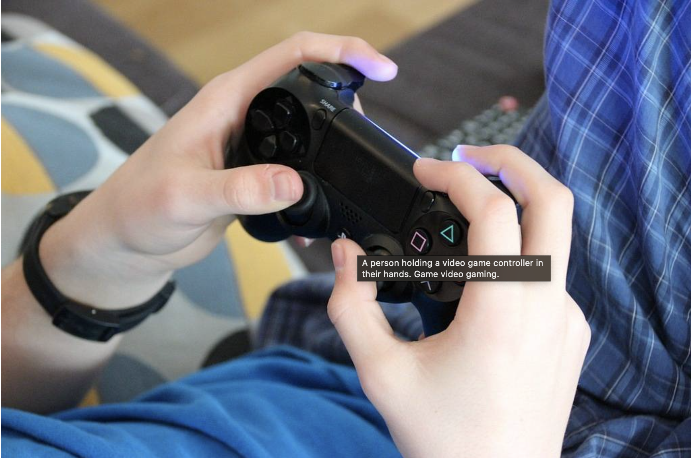

I’ve been playing video games since I was 7 years old. To me, they’re not just fun; they’re like an interactive version of reading a book or watching a movie. Even now, I’m still passionate about gaming and love discussing it.
For as long as I can remember, my family has loved watching movies in the theater, thanks to my mother. Nothing beats the experience of sitting in a theater with a bucket of delicious popcorn on your lap. When I was younger, my parents owned a video rental store, giving us access to many classic films. I vividly remember my mom making us watch the original Star Wars trilogy, the Indiana Jones trilogy, and even Back to the Future. Movies have become such an integral part of my life that I can't imagine ever losing my love for the theater experience.